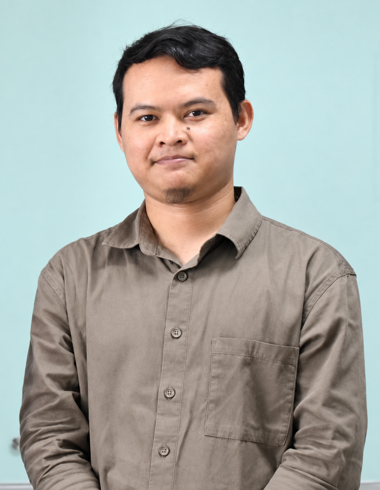
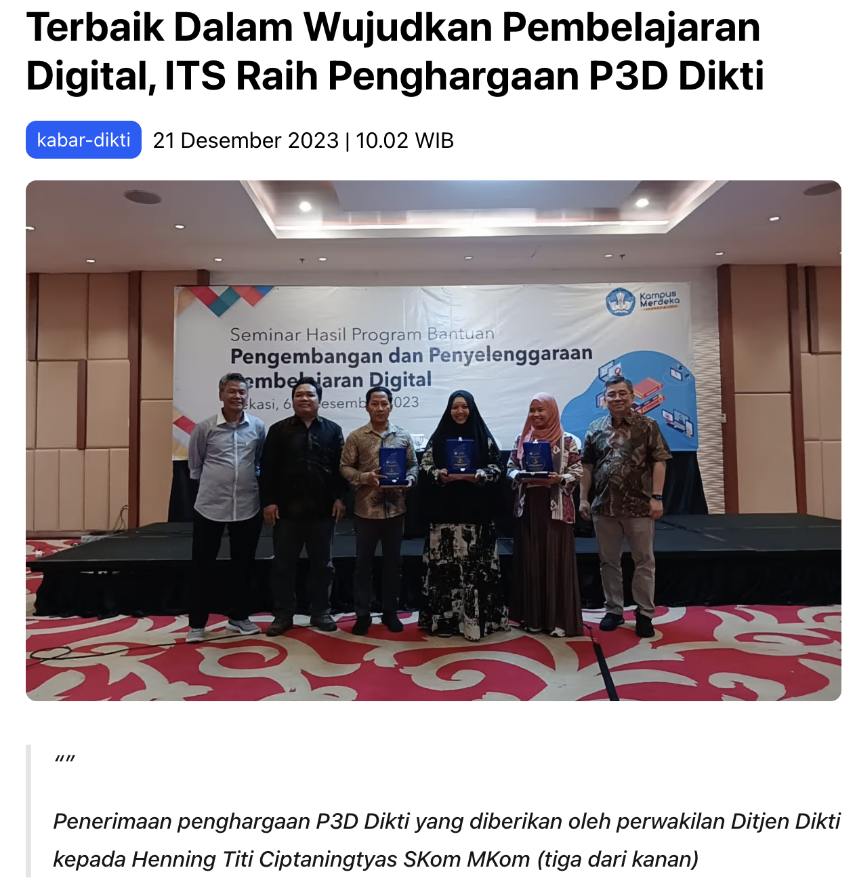
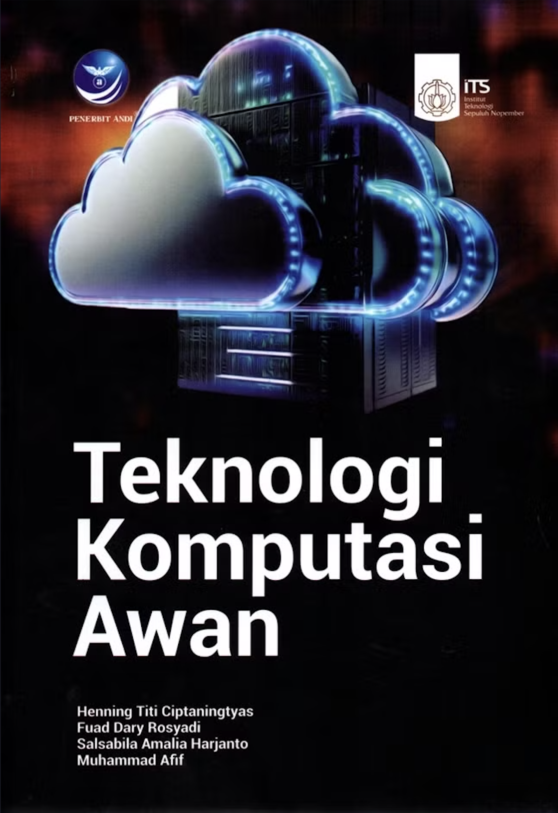
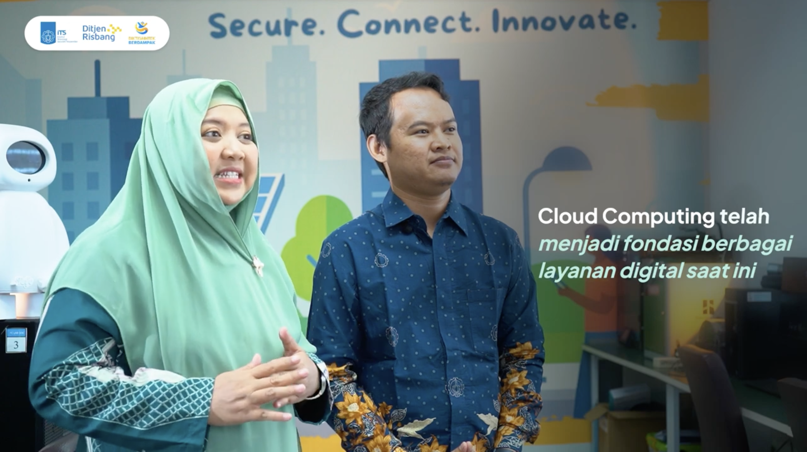

Workshop Peningkatan Kompetensi Dosen Pascasarjana UNISMA
Membuat modul digital, video, dan aktivitas belajar yang menarik — berbasis Outcome-Based Education. Semua contoh di sini bisa langsung dicoba: isi, klik, dan salin.
Fuad Dary Rosyadi, S.Kom., M.Kom.
Departemen Teknologi Informasi, Institut Teknologi Sepuluh Nopember (ITS)
Senin, 28 September 2026 · 08.30–11.30 WIB
Gedung Pascasarjana (Ali bin Abi Thalib), UNISMA

Narasumber
Pendidikan
S1 dan S2 Teknik Informatika, Institut Teknologi Sepuluh Nopember (ITS)
Aktivitas saat ini
Dosen Departemen Teknologi Informasi, ITS
Kalab Digital Education Services, DIRPAIP ITS
rosyadi@its.ac.id

Rekam jejak di pengembangan pembelajaran digital
Bersama Henning Titi Ciptaningtyas, S.Kom., M.Kom. mengembangkan platform daring mata kuliah Teknologi Komputasi Awan.
kemdiktisaintek.go.idTeknologi Komputasi Awan (ET234403) — semua contoh studi kasus di halaman ini diambil dari mata kuliah ini.
lmsspada.kemdiktisaintek.go.idBerlanjut ke penulisan buku ajar (2024–2025)

Kelanjutan dari pengembangan platform SPADA — materi yang sama dituangkan menjadi buku ajar cetak untuk mata kuliah Teknologi Komputasi Awan.
gramedia.comBerlanjut ke video pembelajaran berbasis riset (2026)

youtube.comProgram penguatan talenta akademik melalui produksi video pembelajaran berbasis riset, 2026.
risbang.kemdiktisaintek.go.id08.30 – 11.30 WIB
| Waktu | Segmen | Fokus |
|---|---|---|
| 08.30–09.00 | Pembukaan & Desain LMS OBE | Peta CPMK ke aktivitas |
| 09.00–10.00 | Membangun Sumber & Aktivitas | Storytelling & microlearning, modul digital, video (Gemini Notebook), H5P (Lumi), tugas proyek — dibantu AI |
| 10.00–10.10 | Rehat sejenak | — |
| 10.10–11.05 | Merancang Evaluasi | Kuis, HOTS+rubrik, rubrik proyek, presentasi, portofolio — dibantu AI |
| 11.05–11.30 | Mini Project & Penutup | Modul digital mini |
Tujuan & Luaran
Mampu memetakan CPMK ke jenis aktivitas LMS yang tepat.
Menyusun konten digital ringkas dan mudah diingat.
Produksi cepat dengan bantuan AI, tanpa keahlian editing.
Menyusun asesmen level analisis-evaluasi-kreasi.
Segmen 1 · 08.30–09.00
Sebelum masuk ke alur
Outcome-Based Education (OBE) adalah pendekatan yang merancang seluruh proses belajar — materi, aktivitas, dan penilaian — mulai dari capaian pembelajaran yang ingin dicapai, bukan dari daftar topik yang harus disampaikan.
| Aspek | Pendekatan tradisional | Outcome-Based Education |
|---|---|---|
| Titik awal perancangan | Daftar topik/bab yang harus diajarkan | Capaian pembelajaran (CPMK) yang harus dikuasai |
| Fokus utama | Menyampaikan materi selengkap mungkin | Memastikan kompetensi yang terukur benar-benar tercapai |
| Peran dosen | Sumber utama informasi di kelas | Perancang pengalaman belajar & aktivitas |
| Waktu penilaian | Di akhir, menguji hafalan/pemahaman materi | Berkelanjutan, menguji pencapaian tiap Sub-CPMK |
| Ukuran keberhasilan | Materi tersampaikan sesuai silabus | Mahasiswa mampu menunjukkan kompetensi yang dijanjikan |
Implikasinya: modul, video, dan soal yang disusun di workshop ini selalu diturunkan dari Sub-CPMK terlebih dulu — bukan sebaliknya.
Empat langkah ini selalu berurutan — setiap langkah menurunkan langkah sebelumnya menjadi lebih konkret dan terukur. Poin 3 dan 4 adalah fokus utama workshop hari ini.
1 · CPMK
Kompetensi besar yang ingin dicapai di akhir mata kuliah.
2 · Sub-CPMK
CPMK dipecah jadi kemampuan spesifik per pertemuan/topik.
3 · Aktivitas LMS
Materi, diskusi, kuis, tugas, atau video yang melatih Sub-CPMK tersebut.
4 · Asesmen
Soal, tugas, atau rubrik yang membuktikan Sub-CPMK tercapai.
Sebelum memilih aktivitas & evaluasi
Kata kerja operasional pada Sub-CPMK menentukan level kognitif yang dituju. Level inilah yang lalu menentukan jenis aktivitas dan evaluasi yang tepat dipilih pada poin 3 & 4 sebelumnya.
LOTS · Dasar
Menyebutkan, mendefinisikan istilah/fakta.
Menjelaskan, membandingkan konsep.
Menggunakan konsep pada kasus sederhana.
HOTS · Tinggi
Menguraikan, membedah komponen masalah.
Menilai, memberi argumen atas suatu solusi.
Merancang, mengonstruksi solusi baru.
Kaitan dengan OBE
Level rendah (C1–C3) cocok dengan kuis otomatis & modul singkat. Level tinggi (C4–C6) butuh tugas proyek, diskusi, dan rubrik — bukan sekadar pilihan ganda.
Sumber: Revisi Taksonomi Bloom (Anderson & Krathwohl) & Pedoman Perkuliahan Hybrid, 2025.
Struktur satu topik materi
A
Sapaan, deskripsi, sub-capaian, indikator, skenario pembelajaran.
B
Materi dan cara mahasiswa terlibat dengannya.
C
Minimal 1 bentuk asesmen.
B · Pilihan Sumber & Aktivitas
Semua bisa dibuat dengan tools di workshop ini — pilih sesuai level Bloom Sub-CPMK
Modul digital — storytelling & microlearning — draf dari prompt builder di segmen Aktivitas, untuk penjelasan konsep dasar (PDF/PPT/HTML).
C1–C2Video pembelajaran singkat — Google Gemini Notebook — Explainer/Short/Cinematic, untuk demonstrasi proses.
C2–C3Konten interaktif — H5P via Lumi — drag-drop, hotspot, branching untuk latihan penerapan.
C3Tugas proyek/studi kasus — PBL/PjBL/CBL/TBL — penerapan menyeluruh pada masalah nyata, pilih teknik sesuai tujuan.
C5–C6C · Pilihan Evaluasi
Pilih minimal satu, sesuai level Bloom yang dituju
Kuis otomatis — Wayground / Google Form — cek pemahaman cepat, skor langsung.
C1–C3Soal HOTS + rubrik penilaian — kerangka di segmen Evaluasi, menguji analisis–evaluasi–kreasi.
C4–C6Presentasi atau demo hasil kerja — menilai komunikasi & penguasaan materi.
C4–C5Portofolio digital — rekam jejak perkembangan kompetensi sepanjang semester.
Semua levelStudi kasus Komputasi Awan — dari CPMK sampai evaluasi
CPMK
Merancang dan menerapkan teknologi cloud computing untuk memenuhi kebutuhan organisasi.
Sub-CPMK
Merancang orkestrasi kontainer multi-layanan menggunakan Kubernetes.
Kata kerja & level Bloom
Merancang, mengonstruksi — C6 (Kreasi)
Sumber & Aktivitas dipilih
Evaluasi dipilih
Tugas proyek — instalasi & konfigurasi cluster Kubernetes
→Rubrik proyek (QuickRubric) C6 — ketepatan konfigurasi & orisinalitas solusi
Video screencast 1–2 menit sebagai dokumentasi
→Penilaian kejelasan dokumentasi, dibahas lewat presentasi/demo
Tulis Sub-CPMK, lalu pilih levelnya (boleh lebih dari satu pilihan per kategori)
Segmen 2 · 09.00–10.00
Modul digital, video, dan aktivitas belajar yang menarik — dibantu AI, dieksekusi lewat tools nyata.
Kenapa penting: dua prinsip ini mendasari materi yang akan kita buat di slide-slide berikutnya (modul digital & video) — jadi cukup dipahami sekali di sini, lalu tinggal diterapkan.
1 · Masalah
Situasi nyata yang dialami mahasiswa
2 · Konflik
Mengapa masalah ini sulit diselesaikan
3 · Solusi
Konsep inti, maksimal 3 poin kunci
4 · Refleksi
Pertanyaan/mini-kuis penutup
Prinsip microlearning: satu unit = satu tujuan, durasi tempuh 3–7 menit (baca) atau <5 menit (tonton). Struktur Masalah–Konflik–Solusi–Refleksi ini yang akan dipakai baik untuk modul teks/PDF/PPT/HTML maupun untuk naskah video singkat di slide berikutnya.
Kapan: menjelaskan konsep dasar sebelum aktivitas praktik, dikemas jadi unit belajar singkat yang mudah diingat. Gunakan struktur storytelling (Masalah–Konflik–Solusi–Refleksi) dari slide sebelumnya.
Langkah: pilih format keluaran (PDF/PPT/HTML) → AI generate draf storytelling sesuai struktur + sisipkan cek pemahaman tiap 2 bagian → rapikan → unggah ke LMS.
Langkah: unggah materi ke notebook → panel Studio → pilih jenis video → generate → unduh/tonton → unggah ke LMS.
Explainer
Ringkasan terstruktur yang menghubungkan tiap konsep dalam materi. 80+ bahasa termasuk Indonesia, gaya visual bisa dikustomisasi.
Short
Video ~60 detik, langsung ke poin-poin inti. 70+ bahasa, pilihan gaya visual lebih terbatas.
Cinematic
Gaya naratif & visual yang lebih imersif untuk ide kompleks. Narasi baru tersedia dalam Bahasa Inggris, tanpa kustomisasi gaya.
Semua jenis video bersifat AI-generated (berpotensi ada kekeliruan) dan proses generate bisa memakan waktu >30 menit.
Kapan: melatih penerapan langsung lewat interaksi (drag-drop, hotspot, branching, dsb.) tanpa perlu install server H5P sendiri — cukup pakai Lumi Cloud (app.lumi.education).
1 · Daftar/Masuk
app.lumi.education, via Google/Microsoft/GitHub/email
2 · New Content
"Create H5P Content" → pilih dari 50+ tipe (cek "Details" utk pratinjau)
3 · Isi (Edit)
Tempel hasil AI ke tab Edit — teks, gambar, feedback benar/salah
4 · Save & View
Simpan (kanan atas) → tab View untuk pratinjau hasil jadi
5 · Share
Link/embed/QR ke LMS, atau Download (H5P/SCORM/HTML)
Tipe konten yang relevan: Course Presentation, Drag and Drop, Image Hotspots, Branching Scenario, Interactive Video, Question Set. Paket: Free (konten tanpa batas, unggahan maks 15 MB) sudah cukup untuk kelas biasa; Pro ($10/bln atau $100/thn, maks 500 MB) menambah fitur feedback individual per mahasiswa.
Kapan: menguji penerapan menyeluruh pada masalah nyata (capstone kecil). Pilih teknik sesuai tujuan pembelajaran — AI membantu susun brief, kriteria, dan skenario sesuai teknik yang dipilih.
Problem-Based (PBL)
Mulai dari masalah nyata yang belum terstruktur; mahasiswa mencari sendiri konsep & solusinya, dosen jadi fasilitator.
Contoh: "organisasi X kesulitan skalabilitas — rancang solusinya."
Project-Based (PjBL)
Mahasiswa mengerjakan proyek nyata sepanjang periode waktu tertentu hingga menghasilkan produk/deliverable konkret.
Contoh: bangun & deploy aplikasi di cluster Kubernetes dalam 3 minggu.
Case-Based (CBL)
Analisis studi kasus otentik yang sudah terjadi; mahasiswa mendiskusikan & mengevaluasi keputusan yang diambil.
Contoh: bedah insiden downtime layanan cloud sebuah perusahaan.
Team-Based (TBL)
Belajar mandiri dulu (readiness test individu & tim), lalu terapkan konsep bersama tim saat sesi kelas.
Contoh: tim rancang arsitektur cloud, lalu presentasikan & saling menilai.
10.00 – 10.10 WIB
Segmen 3 · 10.10–11.05
Lima cara menilai capaian — dari kuis otomatis sampai portofolio, dibantu AI.
Kapan: cek pemahaman cepat dengan skor & leaderboard langsung. Wayground punya fitur AI bawaan (Wayground AI) untuk generate soal otomatis dari prompt, dokumen, atau video.
1 · Create
wayground.com → tombol "Create" → pilih Quiz/Assessment
2 · Generate with AI
Pilih sumber: Prompt/Teks, Dokumen (PDF/PPT/DOC/gambar), atau video YouTube
3 · Atur preferensi
Jumlah soal, jenjang, mapel, bahasa → Generate
4 · Review & Publish
Cek/edit tiap soal (akurasi AI bervariasi) → Publish
5 · Bagikan
Live game (kode/QR) atau assign PR via link/Google Classroom
Teknik prompting: sertakan topik spesifik + jenjang/mapel + jumlah soal + level kognitif (Bloom) yang diinginkan agar soal tidak generik — jika dari dokumen, unggah materi kuliah asli (maks ± 16.000 karakter terbaca) supaya soal sesuai konten yang diajarkan, bukan pengetahuan umum AI.
Kapan: menguji analisis–evaluasi–kreasi, dinilai manual. Langkah: AI buat soal HOTS + rubrik 4 level → sesuaikan kata kerja dengan level Bloom yang dituju → bagikan ke mahasiswa sebelum pengerjaan.
Alternatif tools rubrik: QuickRubric atau Rubistar.
Kapan: menilai komunikasi & penguasaan materi secara langsung. Langkah: AI susun pertanyaan pendalaman + indikator penilaian → jadwalkan sesi 5–10 menit/mahasiswa → nilai dengan indikator yang sudah disiapkan.
Kapan: merekam jejak perkembangan kompetensi sepanjang semester. Langkah: AI susun struktur portofolio berdasar Sub-CPMK → siapkan folder bersama (Drive/Padlet) → mahasiswa unggah bukti karya per topik.
Segmen 4 · 11.05–11.30
Rangkai semuanya jadi satu modul digital mini.
Lembar Kerja Mini Project
Centang tiap langkah yang sudah selesai:
Catat hasil tiap langkah di Lembar Kerja Mini Project yang sudah dibagikan.
Refleksi & Tindak Lanjut
Sub-CPMK mana yang akan diubah ke format ini minggu depan?
Aktivitas mana yang ingin dicoba lebih dulu — microlearning, video, atau soal HOTS?
Bantuan apa yang masih dibutuhkan dari tim Teknologi Pembelajaran?